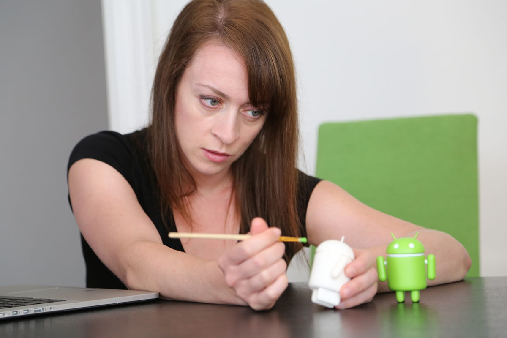
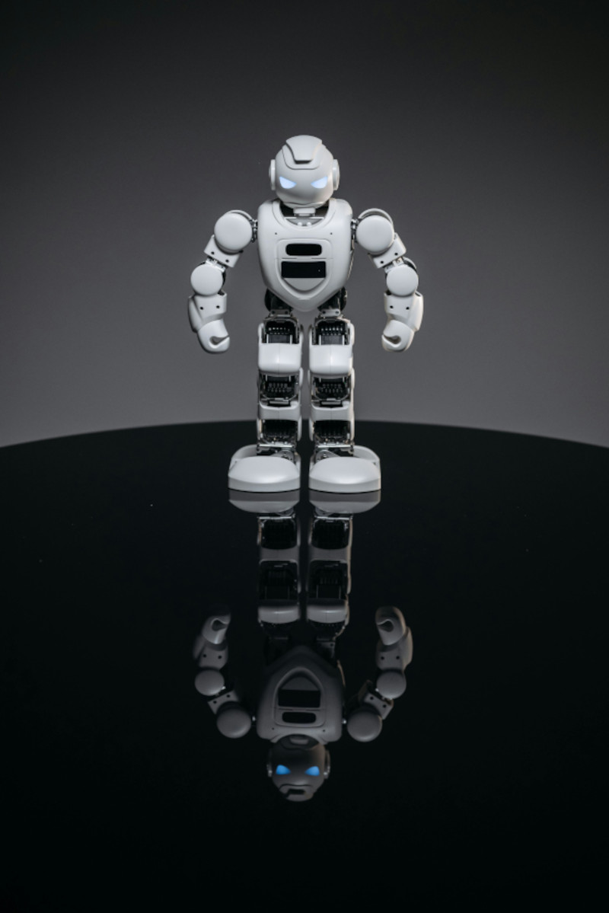
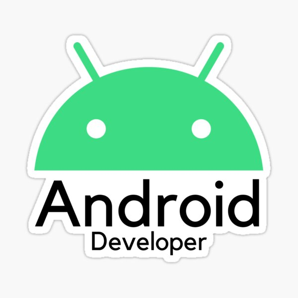

História do Mascote do Android
O Android é o sistema operacional móvel mais utilizado do mundo, e, em 2013, possuía a maior percentagem das vendas mundiais desse tipo de sistema.
A primeira versão
Dispositivos com o sistema Android vendem mais que eletrônicos com Windows, iOS e MacOS combinados, com vendas em 2012, 2013 e, 2014 perto da base de computadores do mundo. Em 2021, a loja de aplicativos
Uma pesquisa com programadores entre abril e maio de 2013 informa que 71% destes desenvolviam para o Android.
Surge um novo mascote
Na conferência anual Google I/O de 2014, a companhia revelou que existem mais de 1 bilhão de usuários Android ativos. Em junho de 2013,Dan Morril este número era de 538 milhões O maior número de usuários no mundo também reflete no número de ataques de hackers no sistema, inkscape com cerca de 5 mil novos malwares sendo criados todos os dias para usuários Android.
O Android é muito popular entre empresas de tecnologia que buscam um software pronto, de baixo custo e personalizável para dispositivos de alta tecnologia. Esta é Irina Blok
Como então surgiu o boneco Android?
O icônico robô foi criado em 2007, quando a gigante das buscas pediu a sua equipe de designers (da qual Blok fazia parte naquela época) para criar um 'look' para seu software — algo que os consumidores pudessem identificar facilmente.
Neste video mostra um pouco da expansão do Android.

Como nos habitámos a ver, a Google tem uma forma diferente e divertida de criar e identificar as novas versões do Android, enquanto as vai desenvolvendo. A cada uma dá um nome de sobremesa, seguindo a ordem do alfabeto e sendo muito criativa.
O sucesso do SO fez dele um alvo para disputas de patente na chamada "guerra de smartphones" entre empresas de tecnologia. A versão mais recente é o Android 14, lançado em 4 de outubro de 2023.